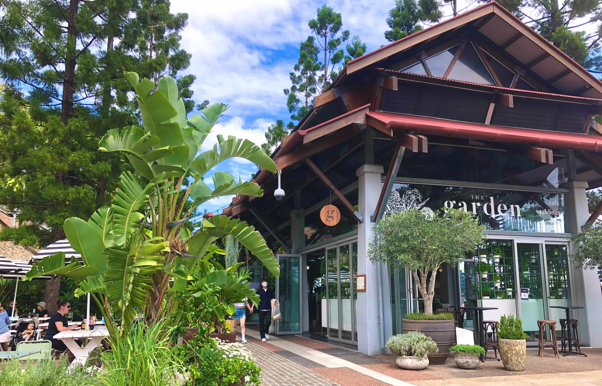
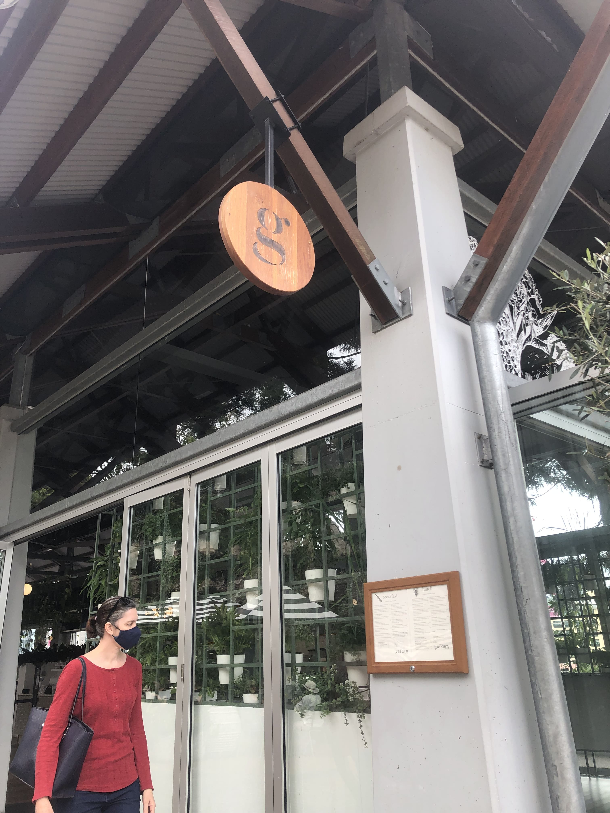
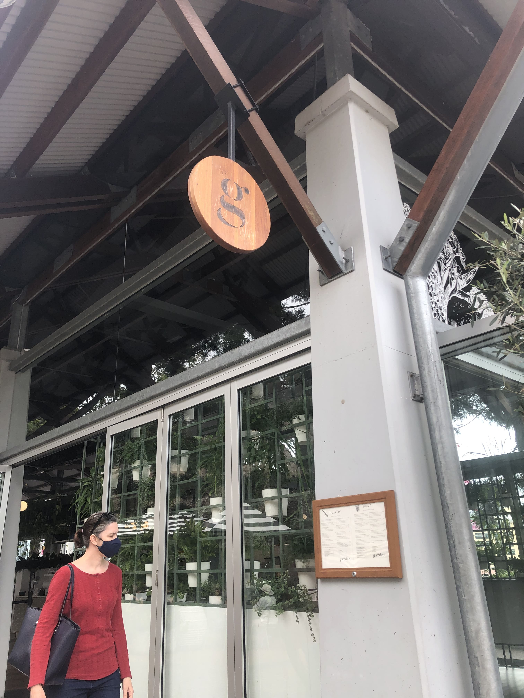
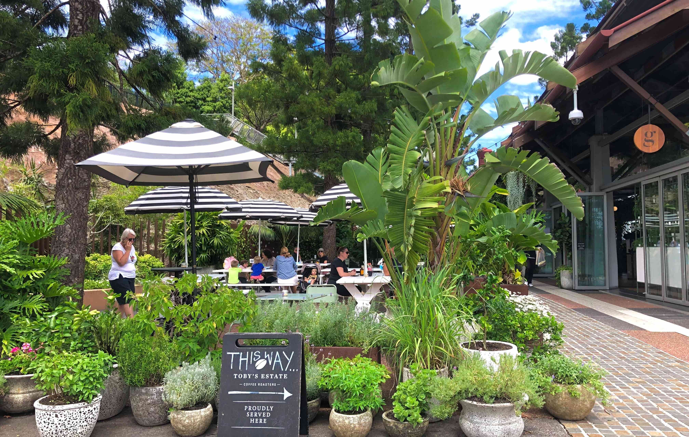

The Garden Cafe
Feeling hungry? The Garden Cafe has lots of yummy options available for you. It's right next to the oval, so run around and have fun while you wait for your food!
The entrance to the cafe is located directly next to the train platform. You can also get there by walking through the parklands.
 

There are heaps of food options, including a kids menu! The kids cheeseburger is pictured on the left.

The cafe is covered in many different kinds of plants, and is always buzzing with locals!